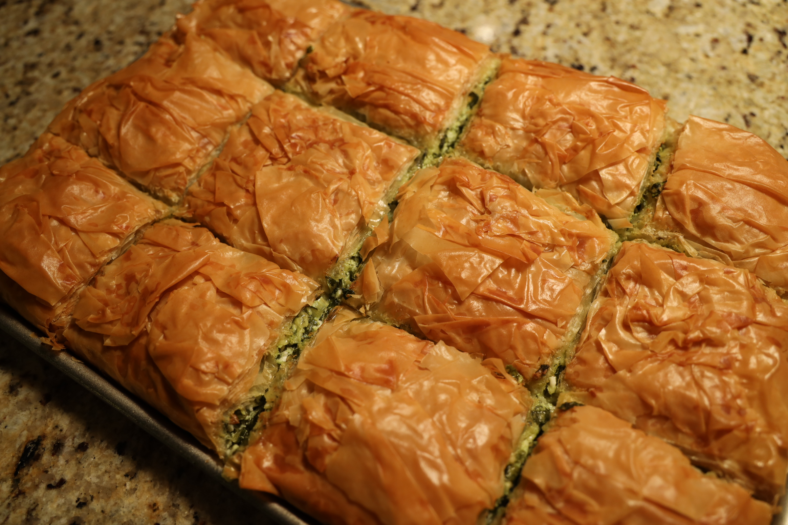
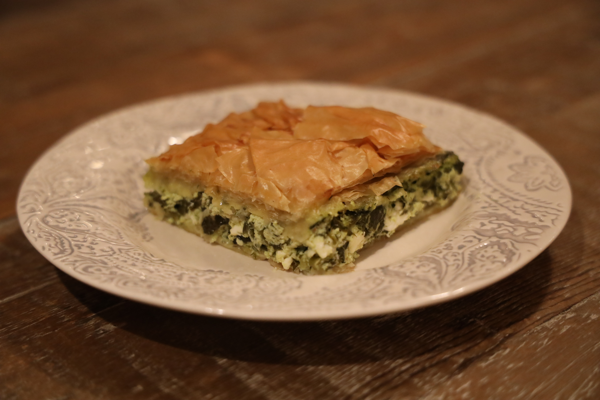

Ova stranica prikazuje jela iz internacionalne kuhinje.
Dec 6. 2021
This is our first post ever
Back to Home Page | Domaća jela | Videos | Test post
Pizza

Sastojci:
- paradajz sos
- peršun
- mocarela
- šunka
- pečurke
- bosiljak

Vrati se na početak
Spanakopita

Sastojci:
- spanać, pola kilograma
- feta sir, 450gr
- riccota sir, 425gr
- mladi luk, 6 struka
- biber, 1 ravna kašičica
- mirodjija, 3 izvišne kafene kašičice
- maslinovo ulje
- jaja, 3 komada
- so, po ukusu (ali će smesa zahvaljujući siru već biti dovoljno slana, shvatićeš da ti so nije potrebna)

Vrati se na početak
© 2021 natasa ivic